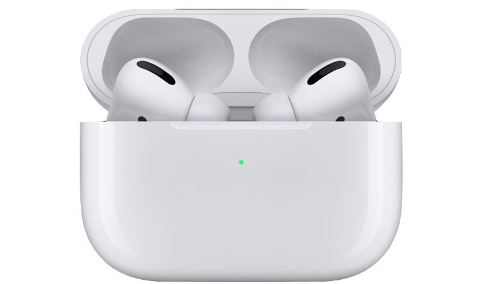

AIRPODS PRO
AirPods Pro are wireless Bluetooth in-ear headphones designed by Apple, initially released on October 30, 2019.[2][3] They are Apple's mid-range wireless headphones, sold alongside the base-level AirPods and highest-end AirPods Max. AirPods Pro use the H1 processor found in second-generation AirPods, but add active noise cancellation, transparency mode, automated frequency profile setting, IPX4 water resistance, a charging case with wireless charging, and interchangeable silicone tips.
R2 500
54 Available